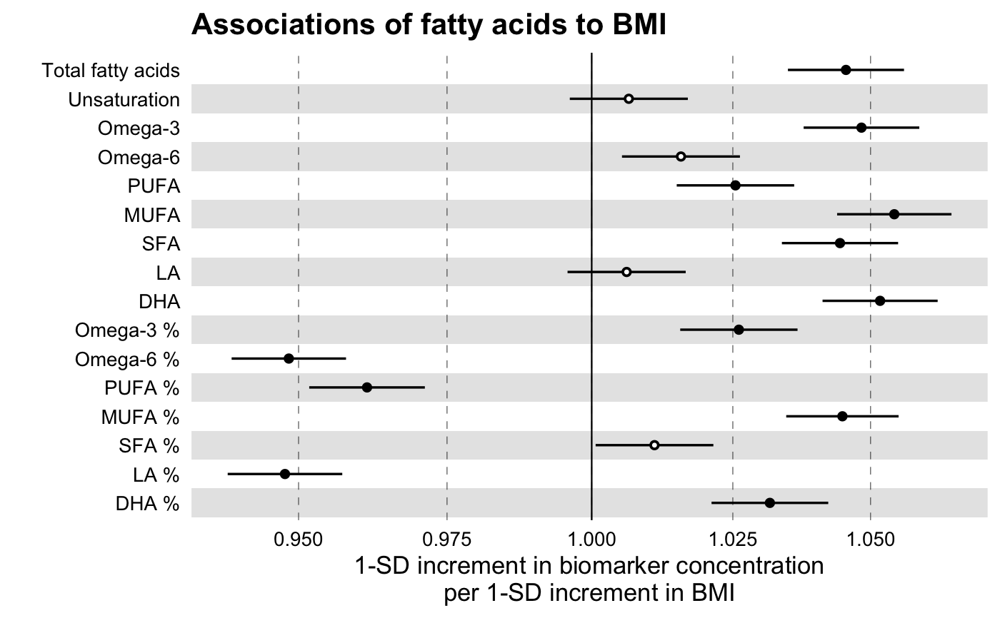
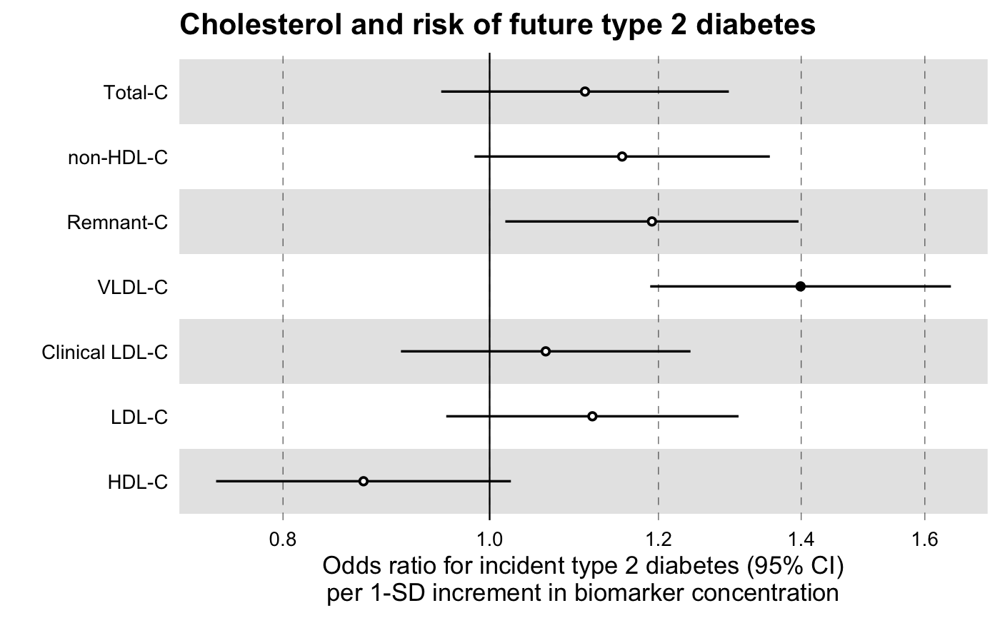

Fit multiple regression models in one go.
discovery_regression(df_long, model = c("lm", "glm", "coxph"), formula, key = key, predictor = predictor, verbose = FALSE)
| df_long | a data frame in a long format that contains a |
|---|---|
| model | a character, setting the type of model to fit on the input data
frame. Must be one of |
| formula | a formula object. For the case of models |
| key | the name of the |
| predictor | the name of the variable for which (adjusted)
univariate associations are estimated. This is stated here in order to
individuate the predictor of interest over many, possible cofactors that are
also present in |
| verbose | logical (default FALSE). If TRUE it prints a message with the names of the predictor and outcome. This may come in handy when, for example, fitting multiple outcomes. |
A data frame with the following: a character variable with the same
name as the key parameter and numeric variables estimate,
se and pvalue with the values of the respective variables
of the linear model.
library(magrittr)#> #>#> #> #># Linear Regression Example # We will use the simulated demo data that come with the package, # ggforestplot::df_demo_metabolic_data # Extract the names of the NMR biomarkers for discovery analysis nmr_biomarkers <- names(df_demo_metabolic_data)[7:234] # Select only variables to be used for the model and collapse to a long # format df_long <- df_demo_metabolic_data %>% # Select only model variables dplyr::select(nmr_biomarkers, gender, BMI) %>% # log-tranform biomarkers dplyr::mutate_at(.vars = c(nmr_biomarkers), .funs = list(~log1p(.))) %>% # Scale biomarkers dplyr::mutate_at(.vars = c(nmr_biomarkers), .funs = list(~as.numeric(scale(.)))) %>% # Collapse to a long format tidyr::gather(key = machine_readable_name, value = biomarkervalue, nmr_biomarkers) df_assoc_per_biomarker <- discovery_regression( df_long = df_long, model = "lm", formula = formula( biomarkervalue ~ BMI + factor(gender) ), key = machine_readable_name, predictor = BMI ) # Filter Nightingale metadata data frame for biomarkers of interest df_grouping <- ggforestplot::df_NG_biomarker_metadata %>% dplyr::filter(group %in% "Fatty acids") # Join the association data frame with the group data above df <- df_assoc_per_biomarker %>% # use right_join, with df_grouping on the right, to preserve the order of # biomarkers it specifies. dplyr::right_join(., df_grouping, by = "machine_readable_name") # Draw a forestplot of the results ggforestplot::forestplot( df = df, name = name, estimate = estimate, se = se, pvalue = pvalue, psignif = 0.001, xlab = "1-SD increment in biomarker concentration per 1-SD increment in BMI", title = "Associations of fatty acids to BMI", logodds = TRUE )# Logistic Regression Example # Extract names of relevant NMR biomarkers nmr_biomarkers <- names(df_demo_metabolic_data)[7:234] # Select only variables to be used for the model and # collapse to a long format df_long <- df_demo_metabolic_data %>% # Select only model variables (avoid memory overhead) dplyr::select( nmr_biomarkers, gender, incident_diabetes, BMI, baseline_age ) %>% # log-tranform biomarkers dplyr::mutate_at(.vars = c(nmr_biomarkers), .funs = list(~log1p(.))) %>% # Scale biomarkers dplyr::mutate_at(.vars = c(nmr_biomarkers), .funs = list(~as.numeric(scale(.)))) %>% # Collapse to a long format tidyr::gather(key = machine_readable_name, value = biomarkervalue, nmr_biomarkers) df_assoc_per_biomarker_gender <- discovery_regression( df_long = df_long, model = "glm", formula = formula( incident_diabetes ~ biomarkervalue + factor(gender) + BMI + baseline_age ), key = machine_readable_name, predictor = biomarkervalue ) # Filter Nightingale metadata data frame for biomarkers of interest df_grouping <- ggforestplot::df_NG_biomarker_metadata %>% dplyr::filter(group %in% "Cholesterol") # Join the association data frame with the group data above df <- df_assoc_per_biomarker_gender %>% # use right_join, with df_grouping on the right, to preserve the order of # biomarkers it specifies. dplyr::right_join(., df_grouping, by = "machine_readable_name") # Draw a forestplot of the results ggforestplot::forestplot( df = df, name = name, estimate = estimate, se = se, pvalue = pvalue, psignif = 0.001, xlab = "Odds ratio for incident type 2 diabetes (95% CI) per 1-SD increment in biomarker concentration", title = "Cholesterol and risk of future type 2 diabetes", logodds = TRUE )